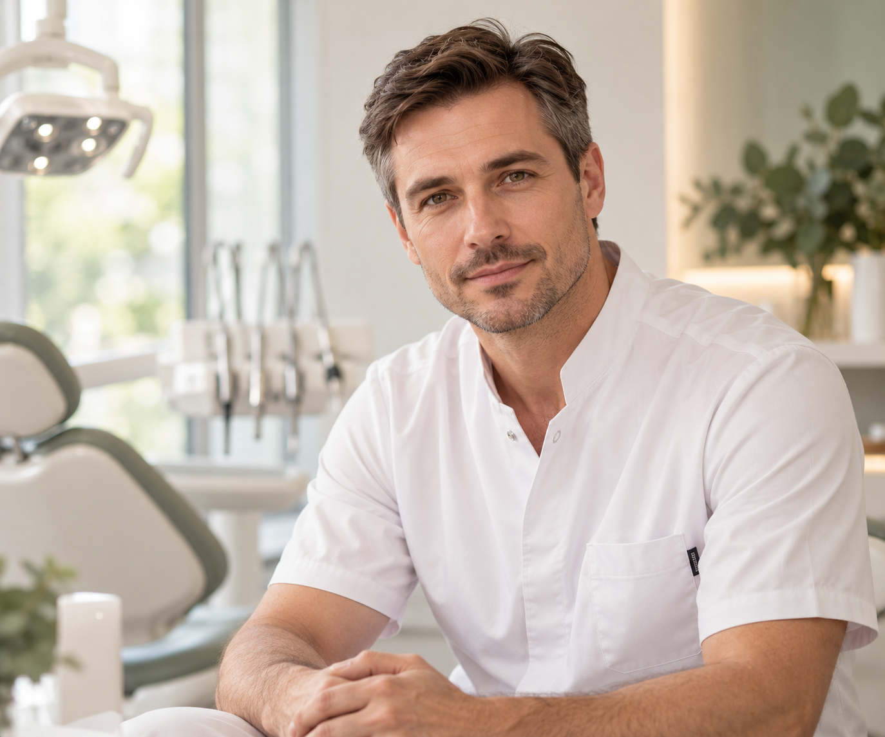

АЛЕКСАНДР МИРОНОВ · СТОМАТОЛОГ-ОРТОПЕД
Восстановление зубов с вниманием к каждой детали
Помогаю выбрать обоснованный вариант протезирования: от восстановления отдельного зуба до комплексной реабилитации. Решение принимаем после диагностики, с учётом функции, эстетики и вашей клинической ситуации.

С какими вопросами обращаются
Когда привычные вещи - улыбаться, разговаривать и принимать пищу - становятся неудобными, важно разобраться в причинах и возможностях восстановления.
Повреждение или значительное разрушение зубов.
Неудобство существующих протезов.
Необходимость повторного протезирования.
С какими задачами можно обратиться
Зуб сильно разрушен
Когда пломбы уже недостаточно и необходимо восстановить форму, функцию и внешний вид зуба.
Коронки и несъёмные конструкции
Отсутствует несколько зубов
Подбираем вариант восстановления с учётом состояния оставшихся зубов, тканей полости рта и индивидуальной клинической ситуации.
Протезирование съёмными конструкциями
Необходимо восстановление зубов на имплантатах
Планируем ортопедический этап так, чтобы конструкция была функциональной, эстетичной и соответствовала общей клинической ситуации.
Протезирование на имплантатах
Александр Миронов
Стоматолог-ортопед
Для меня ортопедическое лечение начинается не с выбора коронки или протеза. Сначала важно понять клиническую ситуацию в целом: состояние зубов и тканей, функцию, ожидания пациента и возможные варианты восстановления.
Моя задача - объяснить эти варианты понятным языком и вместе с пациентом выбрать решение, которое будет обоснованным именно в его ситуации.
- Диагностика до выбора конструкции
- Понятное обсуждение вариантов
- Внимание к функции и эстетике
Клинический подход
Хороший результат начинается задолго до изготовления конструкции. Поэтому лечение проходит последовательно - от понимания клинической ситуации до контроля результата.
-
Диагностика
Оцениваем клиническую ситуацию, состояние зубов и тканей, обсуждаем задачи и ожидания пациента.
-
Планирование
Сравниваем возможные варианты восстановления и выбираем решение с учётом функции, эстетики и клинических условий.
-
Реализация и контроль
Изготавливаем конструкцию, оцениваем результат и определяем рекомендации по дальнейшему наблюдению.
Как проходит консультация
Первая консультация - это прежде всего разговор и диагностика.
-
Знакомимся с вашей ситуацией
Обсуждаем, что беспокоит, чего вы ожидаете от лечения и какие решения рассматривали раньше.
-
Проводим диагностику
Врач оценивает состояние полости рта и определяет, какая дополнительная информация необходима для планирования.
-
Обсуждаем варианты
Вы узнаёте, какие способы восстановления возможны, чем они отличаются и почему врач рекомендует тот или иной вариант.
-
Формируем план
После необходимой диагностики определяется последовательность лечения и его основные этапы.
Частые вопросы
Я не знаю, какой вариант протезирования мне подходит. С чего начать?
Именно для этого нужна первая консультация. Врач оценивает клиническую ситуацию, объясняет возможные варианты восстановления и помогает понять различия между ними.
Можно ли заранее узнать стоимость лечения?
Окончательная стоимость зависит от клинической ситуации и выбранного варианта восстановления. После необходимой диагностики можно сформировать понятный план лечения и обсудить его этапы.
Всегда ли нужна дополнительная диагностика?
Нет. Её объём определяется индивидуально и зависит от клинической ситуации и предполагаемого лечения.
Что делать, если мне предложили несколько вариантов протезирования?
Это нормальная ситуация. Врач объяснит преимущества, ограничения и особенности каждого варианта, чтобы решение принималось осознанно.
Начнём с консультации
Если вы планируете восстановление зубов или хотите разобраться в уже предложенных вариантах лечения, начните с консультации. Обсудим вашу ситуацию и определим, какие решения стоит рассматривать.
Записаться на консультацию- Адрес
- Место для адреса
- Телефон
- Место для телефона
- Часы приёма
- Место для часов приёма
- Запись
- Место для ссылки на запись